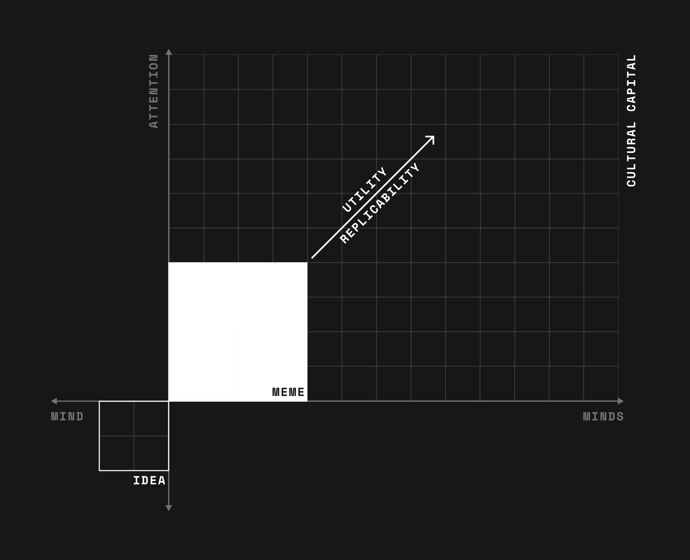
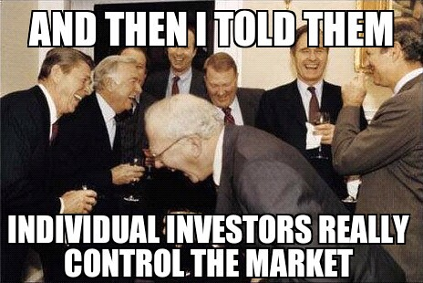
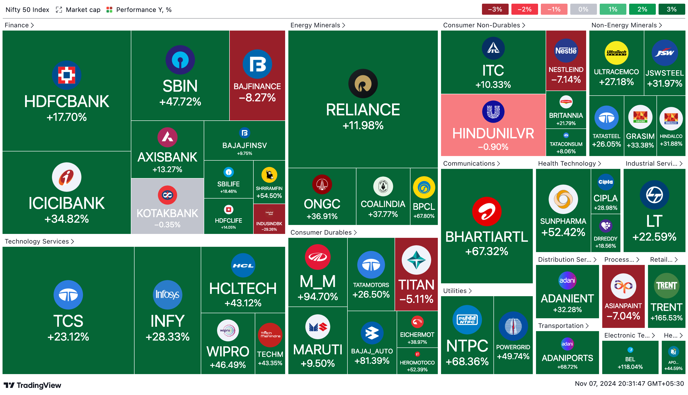
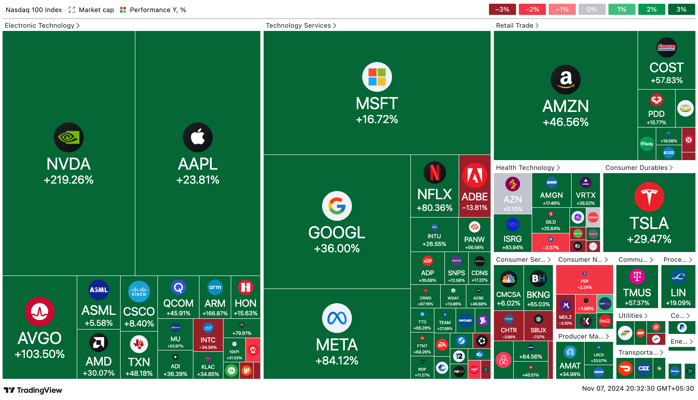
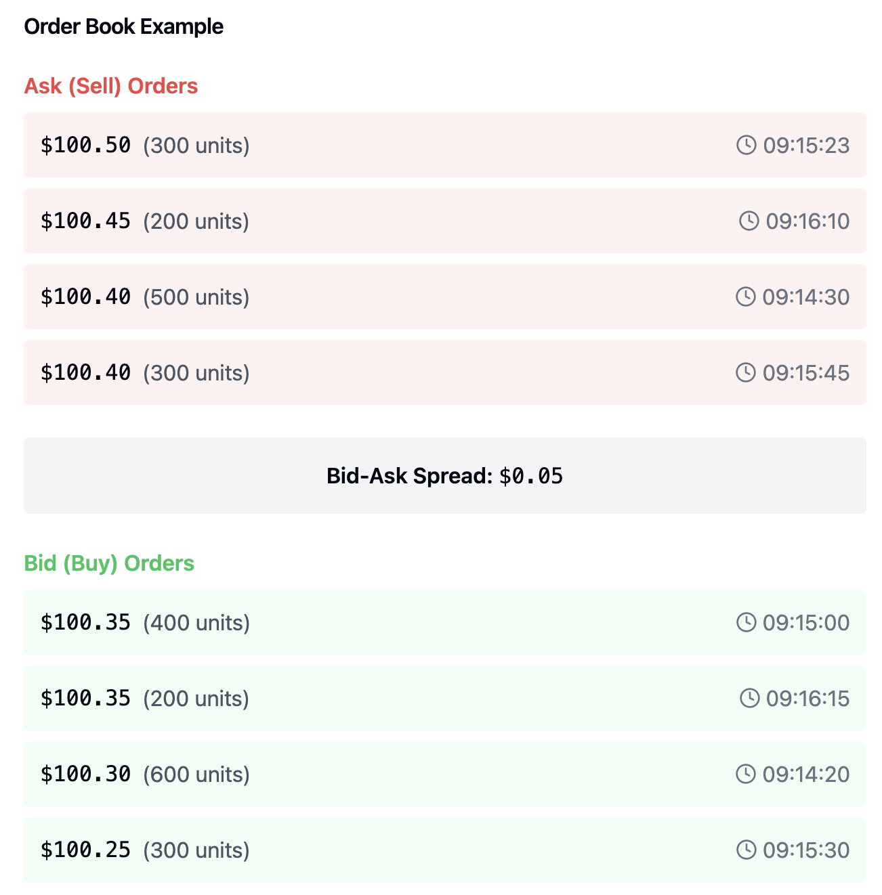
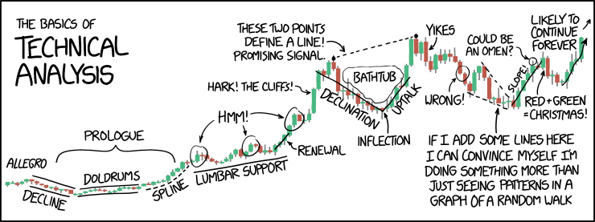
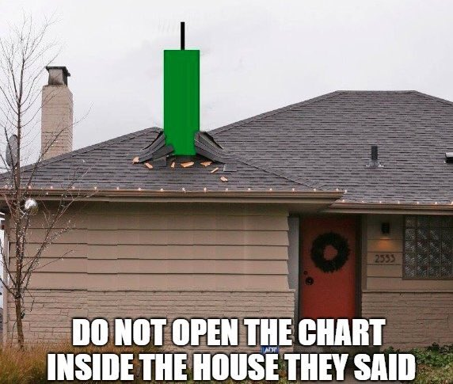
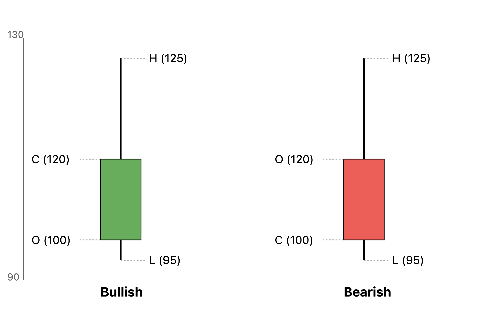
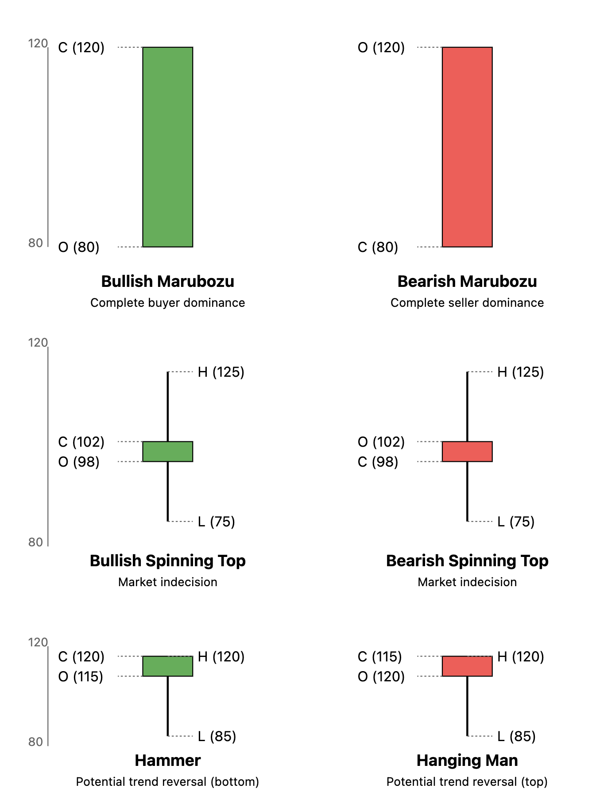

Finance
Capital markets are, in their essence, humanity's wager on its own future, an affirmation that progress is both possible and worth investing in. They are meant to serve as channels through which resources and capital flow to those who can capitalise on it and trigger value while ideally optimizing risk for the world at large.
This article is a collection of my thoughts on finance and the capital markets. Well that and a bunch of memes.

Basics of Indian Markets¶
- Retail Investors
- Institutional Investors
- Regulator: SEBI (big brother and hopefully a good big brother)
- Depository participants (most banks and few stockbrokers) allow you to interact with NSDL and CDSL (depositories) and maintain your DEMAT account (dematerialization account).
- Portfolio management starts at a minimum of 50 lakhs unlike mutual funds.
- Hedging: a strategy used to protect against potentialloses (essentially a form of optionality/insurance); might limit potential gains.
- Zerodha is a depository participant of the Central Depository Services Limited (CDSL).
- Clearing corporation: ensure no defaults in debit/credit transactions.
Basics of Businesses¶
- Angel invstors, venture capitalists (serieses), private equity, IPO
- CAPEX: Capital Expenditure
- Equity based raising: reduces equity share
- Debt based raising: the interest problem, debt financing charges
- Debt restructuring: negotiating with creditors to change the terms of the debt, such as extending the payment period, lowering interest rates, or reducing the principal amount owed.
- Why go public?
- Raise funds
- Spread risk across larger group of investors
- Exit for early investors
- Reward employees
- Improve visibility
- Underwriting: process by which a financial institution, typically a bank or insurance company, evaluates and takes on the risk of a financial transaction.
- In insurance, underwriting determines the policy terms and premiums.
- In investment banking, underwriters work with companies issuing stocks or bonds to evaluate the risk and help set the initial price for public offerings.
- IPO: merchant banker \(\to\) SEBI and registration \(\to\) DRHP preparation \(\to\) Market the IPO \(\to\) Price Banding \(\to\) Book building \(\to\) Closure \(\to\) Listing day
Investing and Trading¶

The way we generally get introduced to the capital markets and its derivatives is through a broker which acts as the router to the stock exchange which essentially behaves as a marketplace.
Types of market participation:
-
Trading
- Day Trader: risk averse
- Scalper: highly risk averse
- Swing Trader: less risk averse
-
Investing
- Growth investors: The objective here is to identify companies which are expected to grow significantly because of emerging industry and macro trends.
- Value investors: The objective here is to identify good companies while are undervalued (due to various reasons which maybe short term).
When you trade or invest, the best way to calibrate your performance is through CAGR and pinning it against the standard FD interests provided by banks and the general inflation of the country and its currency.
The Index¶
The general health of a stock market is denoted by its associated indices which are generally an aggregation of the largest and most frequently traded stocks within the exchange that is presenting the index.
The usefulness of indexes are as follows: - Information: trend - Benchmarking: yardstick - Trading and Hedging: dealing with index and its related securities (risk management)
So how is the index calculated? Well, we provide some weights to the associated stocks and this is done using free float market capitalisation (larger the market capitalization, higher the weight).


Commonly used jargons¶
- Bull Market: market is on the rise
- Bear Market: market is on the decline
- Trend: direction of the market
- Volume: total transactions both buy and sell put together
- Market Segment
- Capital Market: equities, preference shares, warrants and exchange traded funds
- Futures and Options: equity derivatives
- Debt Market: bonds, debentures, government securities
Bid and Ask¶
The price that sellers ask you is ask and the price that buyers bid is bid. The difference between the two is called the spread or the bid-ask spread.
The priority in which the orders across the bid-ask spread are executed is called the price-time priority. - Exchanges give priority to sellers willing to sell at the least possible price and buyers willing to buy at the highest possible price. - If two orders have the same price, the order that was placed first is executed first. - Obviously, market orders (no fixed ask/bid just fastest matching) are usually given higher priority than limit orders (fixed ask/bid).
Example¶
Consider the following order book:

-
Current Bid-Ask Spread:
- Best (lowest) ask price: $100.40
- Best (highest) bid price: $100.35
- Spread = $0.05
-
Price-Time Priority for Sell (Ask) Orders:
- Two orders at $100.40:
- First priority: 500 units at 09:14:30 (placed first).
- Second priority: 300 units at 09:15:45 (placed second).
- Then $100.45: 200 units.
- Then $100.50: 300 units.
- Two orders at $100.40:
-
Price-Time Priority for Buy (Bid) Orders:
- Two orders at $100.35:
- First priority: 400 units at 09:15:00 (placed first).
- Second priority: 200 units at 09:16:15 (placed second).
- Then $100.30: 600 units.
- Then $100.25: 300 units.
- Two orders at $100.35:
If a new market order comes in, here's how it would be executed: - For a market buy order: It would first take the 500 units at $100.40 (earliest order), then the 300 units at $100.40 (later order), then move up to $100.45 if more quantity is needed. - For a market sell order: It would first take the 400 units at $100.35 (earliest order), then the 200 units at $100.35 (later order), then move down to $100.30 if more quantity is needed.
This demonstrates both aspects of price-time priority: 1. Better prices get priority (lower asks and higher bids). 2. At the same price level, earlier orders get priority.
Finally remember, all equity/stock settlements in India happen on a T+2 basis.
Key Company Events¶
-
Dividend: A payment made by a corporation to its shareholders (rewarding), usually as a distribution of profits. A company doesn't have to pay dividends, but it may choose to do so to attract investors.
-
Bonus Issue: An issue of additional shares to existing shareholders in proportion to their current holdings (fixed ratio generally). This is done to reward shareholders and are issued out of the company's reserves.
Similar to dividends, bonus issues are usually a way towards repaying the trust shareholders hold in the company. It also increases the liquidity of the shares.
- Stock Split: A corporate action in which a company divides its existing shares into multiple shares to boost the liquidity of the shares. The total market capitalization of the company remains the same, but the number of shares increases.
Similar to bonus issue, stock split is usually to encourage more retail participation by reducing the value per share.
| Aspect | Bonus Issue | Stock Split | Note |
|---|---|---|---|
| Basic concept | New shares issued for free | Existing shares divided | Both increase number of shares |
| Market price effect | Price reduces proportionally | Price reduces proportionally | Identical effect |
| Accounting treatment | Reserves converted to share capital | No change in share capital | Key difference |
| Shareholder wealth | No change in total value | No change in total value | Identical effect |
| Common ratios | 1:1, 1:2, 2:1 etc. | 2:1, 3:1, 5:1 etc. | Similar approach |
| Purpose | Reward shareholders & improve liquidity | Improve stock liquidity | Similar goals |
-
Rights Issue: An issue of additional shares to existing shareholders at a price below the current market price. This is done to raise additional capital. For example 1:4 rights issue means for every 4 shares a shareholder owns, he can subscribe to 1 additional share.
-
Buyback: A buyback is when a company provides the option to buy back shares from other investors in the market (at a premium) to invest in itself (corporate restructuring).
Key General Market Events¶
-
Monetary, Fiscal Policy and Budgets: Central bank and government decisions on money supply, interest rates, taxation, and spending that directly influence economic growth and market sentiment.
-
Inflation and Deflation: The rate at which prices of goods and services rise or fall in an economy, affecting purchasing power, interest rates, and investment returns.
-
Interest Rates: The cost of borrowing money set by central banks that influences everything from mortgage rates to bond yields, making them a crucial driver of investment decisions and economic activity.
-
Index of Industrial Production (IIP): A monthly economic indicator that measures real production output of manufacturing, mining, and utilities sectors to gauge the growth of industrial activity in an economy.
-
Purchasing Managers Index (PMI): A monthly survey-based index that indicates the economic health of the manufacturing and services sectors by tracking changes in production, new orders, employment, and supplier deliveries.
-
Corporate Earnings Announcement: Quarterly or annual reports from companies that reveal their financial performance, profitability, and future outlook, significantly impacting stock prices and market sentiment.
The Ministry of Statistics and Programme implementation (MOSPI) releases the IIP and PMI data in India, while the Reserve Bank of India (RBI) and the Ministry of Finance are responsible for monetary and fiscal policies.
MOSPI also releases the Consumer Price Index (CPI) while the Office of Economic Adviser (Ministry of Commerce & Industry) releases the Wholesale Price Index (WPI) data, which are key indicators of inflation in India.
CPI measues retail inflation, while WPI measures wholesale inflation.
Analysis¶

As illustrated here by xkcd, technical analysis is 80% bullshit and 20% learning how to read OHLC (candlestick) charts and how to use indicators (RSI, MACD, Bollinger Bands). So from now on whenever I refer to technical analysis, I am refering to this 20% and not the majority astrology shit that people do in its name.
Basics of Technical Analysis¶
We shall first study aspects of technical analysis so that we are first literate enough to read charts and then eventually move on to the philosophy and book-keeping of fundamental analysis.
At the core, technical analysis visualizes the actions (and latent perceptions) of market participants in the form of charts and indicators and helps in identifying entry and exit points.
Here are the core assumptions of technical analysis: 1. Markets discount everything (or everything is priced in, however you want to look at it). 2. Prices move in trends and the trends matter more than what is causing them. 3. History tends to repeat itself and so do trends and people's reactions to those fluctuations in prices.
Candlestick charts¶
The first thing that any market watcher learns is a new kind of weird-ass graph which is called the candlestick chart. The best thing about this chart is that it is a master at encapsulation and scales very very very well wrt any given time period. All you need are \(x\)-sized intervals (e.g, 5 min, 1 month) across a period of \(y\)-time (e.g., 1 day, 25 years). It also encodes more useful information than a line chart.

Essentially, a candlestick chart shows four key price points for each time period: the open, close, high, and low prices. The "body" (rectangle) shows the open and close prices, while the "wicks" (lines) show the high and low. The length of the body shows the price range between open and close, while the wicks show the full trading range. This compact representation makes it easy to see price movement patterns across any time period.

Often just after learning about candlesticks, people try to come up with buy/sell signals based on local patterns across just a couple of candlesticks. Don't end up as "buy drink get high" while in pursuit of "buy low sell high".
Insights from Candlesticks¶
- Short candle indicates subdued activity.
- Long candle indicates extreme activity; however, placing stoploss becomes an issue.
- Candle patterns don't make sense in high volatility or low time frames (< 1 day).
- The underlying idea is that patterns work because they capture repeating human behavior.
- "Simple patterns tend to be more reliable than complex ones" - technical analysts who haven't lost more than 50% of their portfolio.
- Risk tolerance should dictate entry timing, not just pattern recognition.
- Volume should support the story the candles are telling.
- High volumes indicate the presence of smart money.
- Low volumes indicate retail participation.
- When you initiate a trade to either go long or short always make sure if volumes confirm.
- Support and resistance levels might help to understand where there is continual supply (resistance and selling) and demand (support and buying).

Indicators¶
- Moving Averages
- Relative Strength Index (RSI)
- Moving Average Convergence Divergence (MACD)
- Average Directional Index (ADX)
- +DI (Plus Directional Indicator)
- -DI (Minus Directional Indicator)
- Alligator Indicator
- Aroon
- Aroon Oscillator
- Average True Range (ATR)
- ATR Bands
- Supertrend
- Volume Weighted Average Price (VWAP)
Volumes¶
- High Volume = Today's volume > last 10 days average volume.
- Low Volume = Today's volume < last 10 days average volume.
- Average Volume = Today's volume = last 10 days average volume.
| Sl No | Price | Volume | What is the expectation? |
|---|---|---|---|
| 01 | Increases | Increases | Bullish |
| 02 | Increases | Decreases | Caution - weak hands buying |
| 03 | Decreases | Increases | Bearish |
| 04 | Decreases | Decreases | Caution - weak hands selling |
- High volumes indicate the presence of smart money.
- Low volumes indicate retail participation.
- When you initiate a trade to either go long or short always make sure if volumes confirm.
Ten Commandments¶
- Most of technical analysis is mostly bullshit (80-20 as we discussed before).
- Make sure that you are atleast playing a 50/50 game.
- Buy on the rumour, sell on the news. Move with smart money - too much retail can be concering. Unless, they are in the terrible WRONG.
- Market conditions do not matter, companies and their fundamentals do.
- I don't like diversification. If you really want to just for diversification's sake just buy an index fund.
- Btw, in diversification, I meant diversification in the same asset class. Diversification across asset classes is a good idea.
- Volatility is not risk.
- I don't get day trading. I feel and understand its importance in making markets liquid and efficient but I strongly believe that investing and its philosophy is the bread and butter of the capital markets.
- Growth stocks v/s value stocks is bullshit. Just buy good companies and make sure that your money is helping out in the world.
- Capitalism is good. The goal of capitalism is not the accumulation but the flow of capital. Extreme accumulation and control over capital is not good. Exploitation is not good. We must have democracy and basic security for ALL.
Fundamental Analysis¶
What matters? - Strategy and Vision. - Moat. - Management and Shareholding.
- Basic Numbers (Valuation, Share price).
- Financials (P&L, Balance sheet, Cashflow).
- What can go wrong?
P&L Report¶
Talks about a specific time (year, quarter, etc.) period.
- PBT = Total Revenue - Total Expense - Exceptional items
- Net PAT = PBT - applicable taxes
- EPS = (PAT - Preferred Dividents) / Total outstanding ordinary shares
Details are below.
- Revenue: top line of the company, figure out what amongst this is scalable
- Operations revenue
- Sale of products
- Sale of services
- Other operating revenues
- Other income
- Operations revenue
- Expenses:
- Raw material and goods cost
- Salary
- Depreciation and Amortization
- Interest payment
- Others
- PBT (Profit before tax)
- PAT (Profit after tax): bottomline of the company
- Earnings: PAT - Preferred Dividents
Balance Sheet¶
Deals with ownership. Carry forwards from the previous year's balance sheet.
- Assets
- Non current assets
- Current assets
- Liabilities
- Non current assets
- Current assets
- Equity
- Paid in capital (money from shareholders)
- Retained earnings (accumulated PAT)
Cashflow Statement¶
Happens through the following. If company takes in money then its positive (e.g., selling assets, raising funds), if it gives out money then its negative (e.g, paying dividends, paying debts, buying assets).
- Operating Activities
- Investing Activities
- Financing Activities
Connecting the Dots¶
PAT flows from P&L to Balance Sheet. Cash and cash equivalents flow from Cashflow Statement to Balance Sheet.
Let's break down different scenarios:
-
Selling Products for Cash:
- Cash (Asset) INCREASES
- Revenue increases which increases Equity
- Assets and Equity both increase
-
Taking a Loan:
- Cash (Asset) INCREASES
- Loan (Liability) INCREASES
- Assets and Liabilities both increase
-
Paying Bills:
- Cash (Asset) DECREASES
- Either:
- Accounts Payable (Liability) DECREASES (if previously recorded)
- Expense increases which decreases Equity (if immediate payment)
-
Buying Inventory:
- Cash (Asset) DECREASES
- Inventory (Asset) INCREASES
- Total Assets remain the same (just changed form)
Key Points:
- Cash is always an ASSET, never a liability
- Making sales increases both assets (cash) and equity (through revenue)
- Changes in one side of the equation must be balanced by changes in the other side
Common misconception: People sometimes think debt/liabilities increase cash, which is temporarily true when taking a loan, but:
- The liability (debt) must be repaid.
- Interest payments actually decrease cash over time.
- The initial cash increase is offset by the obligation to repay.
Ratios¶
-
Profitability Ratios
- Operating margin
- EBIDTA = Earnings before interest, taxes, depreciation, and amortization.
- Operating margin = EBITDA / Total Revenue = EBITDA margin
- EBIDTA margin = (Total Revenue - Operating Expenses) / Total Revenue
- PAT margin = PAT / Revenue
- Return on equity or ROE
- ROE measures the efficiency with which a company generates profits from each unit of equity.
- ROE = PAT / Average Equity
- PAT is earned throughout the year.
- Equity changes throughout the year.
- Using just end-of-year equity would distort the ratio, so often averaging is done.
- The total equity includes both paid-in capital and retained earnings.
- Higher the ROE the better but note that debt can artificially inflate ROE.
\[\text{ROE} = \underbrace{\frac{\text{PAT}}{\text{Sales}}}_{\text{Net Margin}} \times \underbrace{\frac{\text{Sales}}{\text{Assets}}}_{\text{Asset Turnover}} \times \underbrace{\frac{\text{Assets}}{\text{Equity}}}_{\text{Leverage Multiplier}}\]\[\text{ROE} = \text{Net Margin} \times \text{Asset Turnover} \times \text{Financial Leverage}\] - Operating margin
-
Leverage Ratios
- Interest Coverage ratio = EBITDA / Interest Expense
- Debt to equity ratio = Total Debt / Total Equity
-
Valuation Ratios
- Need to deal with intrinsic value, relative value, option based value and replacement value.
- Price to book ratio or P/B
- P/B = Market Cap / Total Equity = Market Value / Book Value
- P/B = Price or market value per share / Book value per share
- Book Value per share = Total Equity / Total outstanding ordinary shares
- Book Value: sort of the historical cost of setting up the company
- Market Value: the future cost of setting up the company with its future progressions priced in
- Price to earnings ratio or P/E
- P/E = Market Cap / Earnings
- P/E = Price per share / EPS
- EPS = (PAT - Preferred Dividents) / Total outstanding ordinary shares
- Price to sales ratio or P/S
- P/S = Market Cap / Total Sales
- P/S = Price per share / Sales per share
P/B ratio scale¶
- High P/B (\(3-10+\))
- Deep tech, biotech, software
- Few physical assets, high intangible value
- Equalish P/B (\(1-3\))
- Banking, insurance, manufacturing
- Assets mostly financial, easier to value or substantial physical assets
P/E ratio scale¶
-
High P/E (\(25-50+\))
- Deep tech, biotech, software
- High growth expectations, R&D value
-
Medium P/E (\(15-25\))
- Consumer Staples, industrial, healthcare
- Stable growth, established markets
-
Low P/E (\(5-15\))
- Banking/Financial, energy, basic materials, automotive
- Cyclical nature, mature markets
P/S ratio scale¶
-
High P/S (\(5-15+\))
- Software, biotech
- High margins, recurring revenue
-
Medium P/S (\(1-5\))
- Healthcare, consumer discretionary, business services
- Moderate margins, stable demand
-
Low P/S (\(<1\))
- Retail, airlines, groceries, auto manufacturers
- Very thin margins, high competition